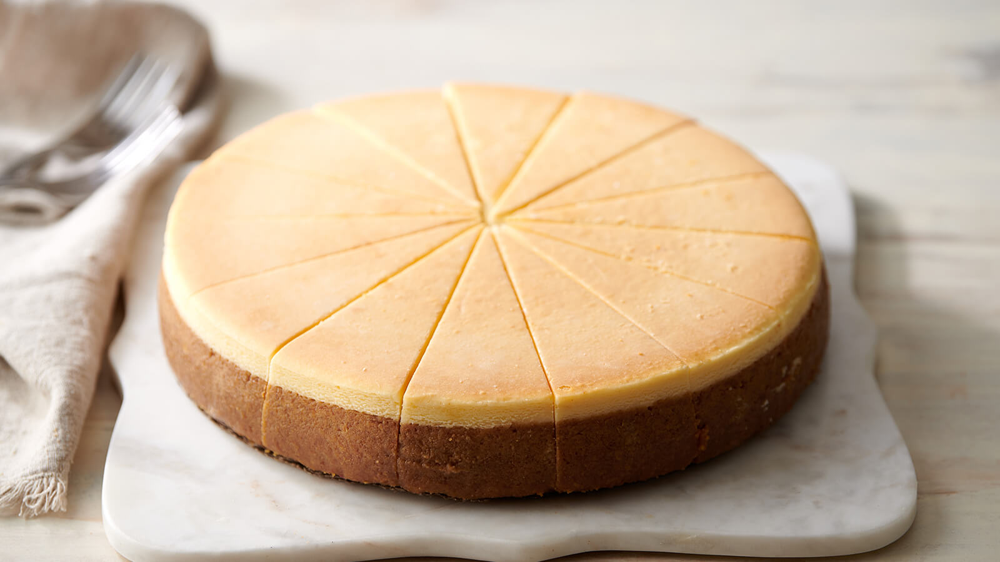

Cheesecake

Cheesecake is a dessert that was originated in Ancient Greece. It consists of one or more layers. The main, and thickest, layer consists of a mixture of soft, fresh cheese (typically cottage cheese, cream cheese or ricotta), eggs, and sugar. If there is a bottom layer it most often consists of a crust or base made from crushed cookies (or digestive biscuits), graham crackers, pastry, or sometimes sponge cake.
Cheesecake may have been a popular dish in ancient Greece, possibly prior to the Roman's adoption of the dish. The earliest attested mention of a cheesecake is by the Greek physician Aegimus. The earliest extant cheesecake recipes are found in Cato the Elder's De Agri Cultura, which includes recipes for three cakes for religious uses: libum, savillum and placenta. Of the three, placenta cake is the most like modern cheesecakes.
Ingredients
- 1 and 1/2 cups (180 grams) crushed graham cracker crumbs
- 1/3 cup (65 grams) granulated sugar
- 5 tablespoons (70 grams) unsalted butter, melted
- 32 ounces brick-style cream cheese softened to room temperature
- 1 cup (230 grams) full-fat sour cream room temperature
- 1 cup (200 grams) granulated sugar
- 2 teaspoons pure vanilla extract
- 4 large eggs room temperature
Preparation
Graham Cracker Crust
- Preheat oven to 325°F (163°C). Combine the crushed graham cracker crumbs and granulated sugar in a medium-sized mixing bowl and stir until well combined. Add the melted butter and mix until all of the crumbs are moistened.
- Scoop the mixture into a 9-inch springform pan and firmly press it down into one even layer. Bake at 325°F (163°C) for 10 minutes, then remove from the oven and set aside to cool slightly while you make the filling.
Cheesecake Filing
- Set a large pot of water to boil for the water bath before getting started with the filling.
- In the bowl of a stand mixer fitted with the paddle attachment, or in a large mixing bowl using a handheld mixer, beat the cream cheese on low-medium speed until smooth. Add the sour cream and mix until fully combined, stopping to scrape down the sides of the bowl as needed. Then add the granulated sugar and pure vanilla extract and mix until well combined.
- In a separate small mixing bowl, lightly beat the eggs. Add the beaten eggs to the mixing bowl with the cheesecake filling and mix on low speed until just combined. Use a rubber spatula to turn the filling a few times to make sure everything is fully mixed together. Set aside.
- Wrap the springform pan with the pre-baked graham cracker crust in aluminum foil, then place into a large oven bag. Fold the oven bag down the sides of the springform pan.
- Pour the cheesecake filling into the springform pan and smooth it out into one even layer. Tap the pan on the counter a couple of times to bring any air bubbles to the top, then use a toothpick or skewer to remove any large air bubbles and smooth them out.
- Add the boiling water you started before the filling to a large roasting pan until it is about 1-inch deep. Carefully place the wrapped springform pan into the roasting pan.
- Transfer the roasting pan with the cheesecake to the oven and bake at 325°F (163°C) for 60-65 minutes or until the edges of the cheesecake are set and the center is still slightly jiggly. Turn the oven off, crack the oven door slightly, and allow the cheesecake to cool in the warm oven for 1 hour.
- After the cheesecake has cooled for 1 hour in the oven, remove it from the oven and transfer to a wire rack to cool completely. Once cooled, cover tightly and transfer to the refrigerator to chill for 5-6 hours or overnight. Run a thin knife around the outside of the cheesecake to loosen it from the pan, carefully release the springform pan, then slice into pieces, serve, and enjoy.